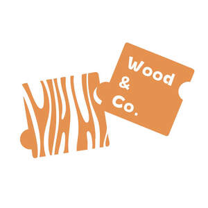
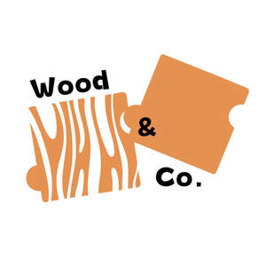

Trade Mark Journal No.2025/025 20 June 2025
UK00004178283 24 March 2025 (11,20)
Mark 1

Mark 2

- Class 11
- LED mood lights; Night lights [other than candles]; LED landscape lights; LED lamps; LED lighting fixtures; LED luminaires; LED lighting installations; Light fixtures; LED light bulbs; LED light strips; LED light machines; LED flashlights; LED underwater lights; Electric night lights; Light-emitting diode [LED] light bulbs; LED candles; LED lighting assemblies for illuminated signs; LED lights for automobiles; Strobe lights [light effects]; Light bulbs; LED safety lamps; LED [light-emitting diode] lighting fixtures; Spot lights for household illumination; Light projectors; Light bars; Fluorescent light bulbs; Halogen light bulb; Light reflectors; Light shades; Spot lights; Incandescent light bulbs; Light Emitting Diode lighting fixtures; Mood lights; Fluorescent lamps with low ultra-violet light output; Light diffusers; Diffusers (Light -); Screens for directing light; Light-emitting diodes [LED] lighting apparatus; Smart light bulbs; HID [high-intensity discharge] stage lighting fixtures; Halogen light bulbs; Stroboscopic lamps [light effects]; Light bulbs for incandescent lamps; Light emitting diode lights for automobiles; Electric light bulbs; Light bulbs, electric; Light assemblies; Light installations; High intensity search lights; Light bulbs for gas-discharge lamps; Reflectors for light control; Fixtures for incandescent light bulbs; Compact fluorescent light bulbs; Laser light projectors; Flourescent electric light bulbs; Electrical light bulbs; Road lights; Miniature light bulbs; Light fittings; Fluorescent lights; Screens for controlling light; LED [light-emitting diode] luminaires; Spot lamps for household illumination; Reflectors for light deflection; Klieg lights; Chemiluminescent light sticks; Ceiling light fittings; Neon lamps for illumination; Strobe lights for discos; Shades for light sources; Lights for incandescent lamps; Self-luminous light sources; Reading lights; Roof lights [lamps]; Search lights; Light sources of electro luminescence; Flood lights; Strip lights; Cycle lights; Light bulbs for directional signals for vehicles; Pilot lights for igniting gas fired apparatus; Ceiling lights; Strings of lights [rope lights]; Sconces [electric light fixtures]; HID [high-intensity discharge] architectural lighting fixtures; Glow sticks for lighting; Street lights; Lamp bulbs; Lamp reflectors; Reflectors (Lamp -); Lamp globes; Lamps; Lamp finials; Candle lamps; Lamp shades; Dashboard lamp bulbs; Lamp mantles; Tail lamp bulbs; Table lamp (Lampshades for -); Electric lamp bulbs; Lamp glasses; Lamp fittings; Projector lamps; Reflector lamps; Infrared lamp fixtures; Lamp holders; Lamp chimneys; Chimneys (Lamp -); Lighting lamps; Halogen lamps; Lamp assemblies; Lamp stands; Lamp casings; Lamp posts; Incandescent lamps; Bedside lamps; Lamp fitments; Lamp bases; Lights for gas-discharge lamps; Pedestal lamps; Germicidal lamps; Desk lamps; Fluorescent lamp tubes; Portable lamps [for illumination]; Washstand lamps; Wall lamps; Fluorescent lamps; Lamp standards; Table lamps; Glass covers being fittings for lamps for sun lamps; Sun lamps; Illuminant lamps for projectors; Lamps for vehicle lighting; Floor lamps; Reflectors for lamps; Portable hand lamps [for illumination]; Arc lamps [lighting fixtures]; Globes for lamps; Lamps (Globes for -); Aquarium lamps; Mercury lamps; Bicycle lamps; Spot lamps; Vacuum lamps; Oil lamps; Infrared lamps; Solar lamp units; Electrical lamps; Projection lamps; Mural lamps; Hanging lamps; Electric incandescent lamps; Nail lamps; Arc lamps; Electric lamps; Lamps (Electric -); Stroboscopic lamps [decorative]; Solar lamps; Overhead lamps; Counterweight fittings for pendant lamps; Motorcycle lamps; Studio lamps; Laboratory lamps; Reading lamps; Tanning lamps; Burners for lamps; Lamps (Burners for -); Street lamps; Standing lamps; Xenon arc lamps; Electrical lamps for outdoor lighting; Gas lamps; Hanging ceiling lamps; Lamps for security lighting; Glass covers for lamps; Pendant fluorescent lighting fixtures; Electrical lamps for indoor lighting; Lamps for lighting purposes; Lamp chimneys made of glass; Discharge lamps; Sun ray lamps; Emergency lamps; Miners' lamps; Ultraviolet lamps used for aquariums; Hangings for lamps; Vehicle dynamo lamps; Safety lamps; Luminous discharge lamps; Flexible lamps; Curling lamps; Filaments for electric lamps; Standard lamps; Chimneys for oil lamps; UV halogen metal vapour lamps; Casings for lamps; Bulbs for lighting; Inspection lamps; Sconce lighting fixtures; Incandescent lamps and their fittings; Lights and lamps for vehicles; Filters for use with lamps; Incandescent lamps for optical instruments; Metal halide lamps.
- Class 20
- Ornamental figurines made of wood; Wooden furniture; Wooden bedsteads; Wooden crates; Wooden pallets; Wooden sculptures; Wooden ladders; Wooden boxes; Wooden signboards; Wooden barrels; Wooden beds; Wooden blinds; Wooden panels for furniture; Wooden bins; Wooden racks [furniture]; Wooden shelving [furniture]; Decorative wooden panels [furniture]; Wooden picture mouldings; Wooden holders for signboards; Wooden storage boxes; Wooden chests for the storage of toys; Prefabricated doors of wood for furniture; Decorative wood boxes; Miniature furniture made of wood; Wooden chests with drawers covered with decorated paper; Wood crates; Wooden boxes for storing toys; Wood statues; Boxes of wood or plastic; Wooden plant markers; Figurines of wood; Wood bedsteads; Bedsteads of wood; Bedsteads [wood]; Wood carvings; Wooden containers [other than for household or kitchen use]; Miniature furniture made of wood fibre; Boxes of wood; Wood boxes; Prefabricated doors of metal for furniture; Figurines of wood, wax, plaster or plastic; Bamboo furniture; Crucifixes of wood, wax, plaster or plastic, other than jewellery; Statuettes of wood, wax, plaster or plastic; Wood doorknobs; Staves of wood; Figurines [statuettes] of wood, wax, plaster or plastic; Statues of wood, wax, plaster or plastic; Ornamental statues made of wood; Wooden lattice work screens; Wooden sticks for holding candy or ice cream; Crucifixes of wood, wax, plaster or plastic, other than jewelry; Door furniture made of wood; Layette boxes [of wood or plastic]; Wood planters; Decorative edging strips of wood for use with fitted furniture; Bentwood furniture; Slatted furniture; Decorative baskets made of wood; Ornamental sculptures made of wood; Roofed wicker beach chairs; Bedsteads made of wood; Wood ribbon; Decorative edging strips of wood for use with furniture; Furniture made from wood; Commemorative statuary cups of wood, wax, plaster or plastic; Carvings of plastic; Figurines made of wood.
FUTURION DESIGNS LIMITED
Representative: FUTURION DESIGNS LIMITED